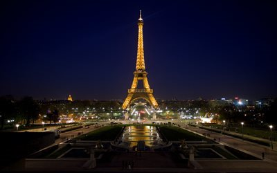
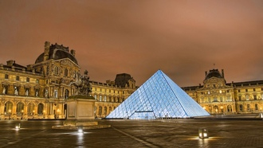
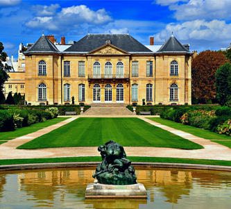
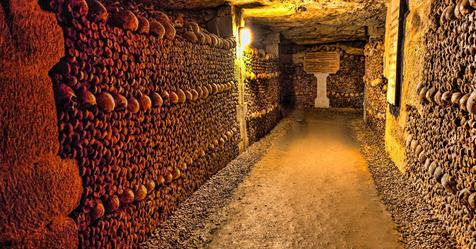

Эйфелева башня

Сегодняшний Париж просто невозможно представить без знаменитой «Железной Леди». Удивительно, но ее создатель, Густав Эйфель, строил эту элегантную конструкцию в качестве временного сооружения специально ко Всемирной выставке 1889 года. К счастью для нас, популярность этого знакового памятника архитектуры спасла его от бесславного уничтожения. Советуем купить билеты заранее в онлайн кассах, чтобы избежать очередей на месте. Башня разделена на три уровня, до каждого из которых можно добраться при помощи лифтов. До третьего уровня идет отдельный лифт, на который нужно пересесть на втором этаже. Самые энергичные посетители могут подняться на второй этаж пешком – для этого им придется преодолеть целых 720 ступенек.
Лувр

Вы сможете уверенно сказать, что побывали в Париж, только после того, как посетите просторный внутренний двор Лувра, увидите его блестящую стеклянную пирамиду и окажетесь в окружении сотен людей, снующих между богато украшенных фасадов музея. В Лувре хранятся десятки тысяч произведений искусства – от древних месопотамских, египетских и греческих артефактов до шедевров да Винчи (включая несравненную Мону Лизу), Микеланджело и Рембрандта. Неудивительно, что это один из самых посещаемых музеев мира и уж точно одна из главных достопримечательностей Парижа.
Музей Родена

В 1908 году известный скульптор, художник, гравер и коллекционер Огюст Роден пожертвовал всю свою коллекцию работ французскому правительству при условии, что власти превратят его замечательный дом в Бироне в музей, посвященный его творчеству. Теперь они радуют глаз ценителей искусства не только в самом особняке, но в прилегающем к нему саду с прекрасными розовыми кустами, который по праву считается одним из самых спокойных мест в центре Парижа. Кстати, именно здесь выставлен его знаменитый «Мыслитель». Покупайте билеты в онлайн-кассах, чтобы избежать гигантских очередей на кассах.
Катакомбы Парижа

Самая мрачная достопримечательность Парижа – это его подземные туннели с черепами и костями. Ввиду катастрофической ситуации с нечистотами, в 1785 году власти города решили очистить переполненные кладбища Парижа и перенести останки усопших в туннели заброшенной каменоломни – так в 1810 году появилось то, что мы сегодня называем Парижскими катакомбами. Спустившись по узкой винтовой лестнице из 130 ступеней на 20 метров вниз, вы попадаете в мрачную сеть подземных туннелей общей длиной 1,5 километра. Выход расположен на другой стороне и для подъема обратно на улицы Парижа вам придется преодолеть 112 ступенек. Попасть в Катакомбы можно доехав до открытой в 2018 году станции метро Денфер-Рошеро. Земля под ногами в подземелье может быть неровной и скользкой, так что выбирайте для похода подходящую обувь. Еще тут очень прохладно — всего 14°С. Фотографировать со вспышкой запрещено. Не советуем брать с собой маленьких детей или людей со слабой психикой.